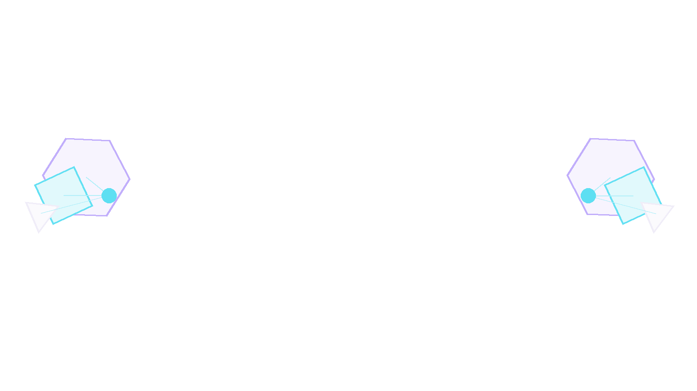
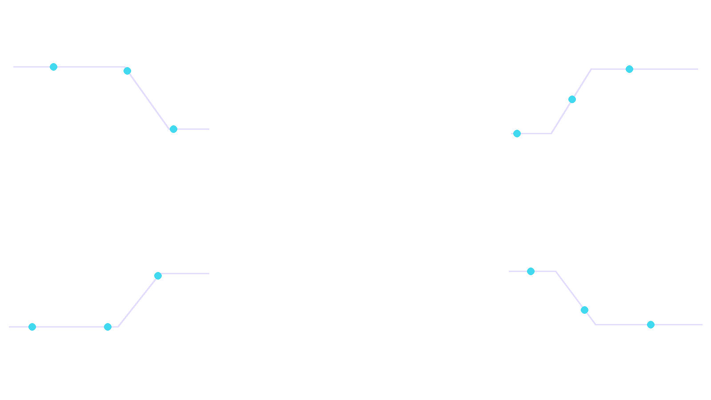
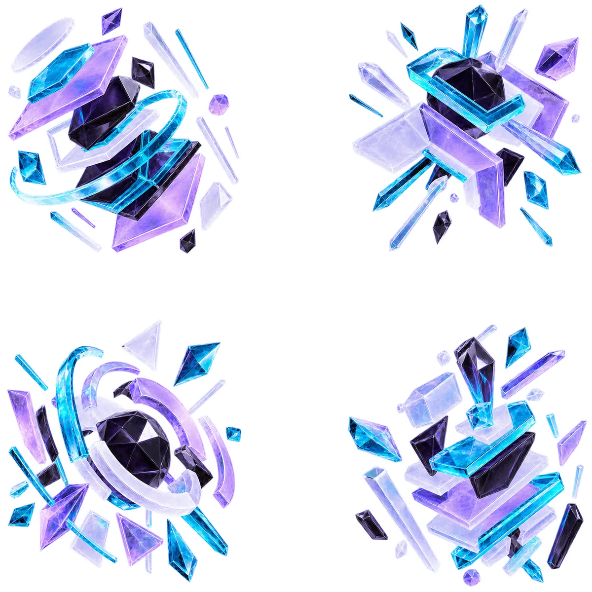

ディスコードの宣伝とは ／ サーバータグ・ブースト
FEATURES ／ 2026年に増えた導線
名札と、底上げ。
2026年のディスコードには、宣伝の外側で効く仕組みが2つあります。サーバータグは、メンバーの名前の横に付く名札。ブーストは、サーバーそのものの底上げ。どちらも「貼る」宣伝とは別の効き方をします。
01
サーバータグ
メンバーの名前の横に付く、4文字の名札
サーバーを表す最大4文字の記号と小さな画像を、そのサーバーに入っている人の名前の横に付けられます。付けている人を見た別の人が、そこから辿れます。本人が歩く広告になる——これが「貼る」宣伝との一番の違いです。
- 付けるかどうかはメンバー本人が選ぶ（強制はできません）
- 1人が同時に付けられるのは1つだけ——選ばれる必要があります
- サーバー側に出せる条件があります（設定に項目が出ていなければ、まだ満たしていません）

02
タグの作り方
4文字に、何を入れるか
設定できるのは4文字と画像1枚だけです。ここに何を入れるかで、見た人が辿るかどうかが決まります。
- サーバー設定を開く——項目が出ていなければ、条件を満たしていません
- 4文字を決める——サーバー名の頭文字より、中身が分かる言葉のほうが辿られます
- 画像を入れる——小さく表示されるので、線の細い絵は消えます

03
ブースト
メンバーの課金で、サーバーが底上げされる
メンバーがサーバーに課金すると、サーバー全体の機能が上がります。一定数が集まるとレベルが上がり、絵文字の枠・音質・アップロードの上限・バナーなどが増えます。

レベルと、要る数
Lv1
2個
- 絵文字の枠が増える
- 音質が上がる
- ステッカーが使える
Lv2
7個
- さらに絵文字が増える
- バナーが使える
- アップロード上限が上がる
Lv3
14個
- 枠が最大になる
- 独自の招待URLが使える
- アップロード上限が最大になる
目次 ／ CONTENTS
01サーバータグは宣伝にどう効くか
貼る宣伝は自分が動いて届けるものです。タグはメンバーが動いて届けるもので、効き方が逆になります。1人が付けてくれれば、その人が入っている他のサーバーでも表示されます。
付けてもらうには
1人が同時に付けられるのは1つだけなので、他のサーバーと比べて選ばれる必要があります。名札を付けたくなるのは、そのサーバーに居ることが本人にとって気持ちいい時です。人数ではありません。
02タグが出せない時に見るところ
設定に項目が出ていない場合、サーバー側の条件を満たしていません。条件は時期によって変わるため、ここに数字を書いても古くなります。設定画面に項目があるかどうかが、そのまま今の答えです。
03ブーストは自分で買うべきか
立ち上げ直後に自分で2個入れてレベル1にするのは、絵文字の枠が要るなら意味があります。ただし宣伝としては効きません。人が来ない理由がブーストだったことは、まずありません。
04レベル3の招待URLは何が違うか
レベル3になると覚えやすい独自のURLが使えます。掲示板やサイトに貼る時、ランダムな英数字より読める文字列のほうがクリックされます。ここは宣伝に効く数少ない部分です。
05よくある質問
サーバータグは無料ですか？
タグを付けること自体に費用はかかりません。サーバー側が出せる条件を満たしている必要があります。
ブーストをやめたらどうなりますか？
個数が区切りを下回った時点でレベルが下がり、増えていた枠や機能が使えなくなります。バナーや独自URLも外れます。